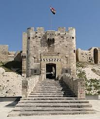
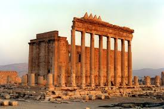
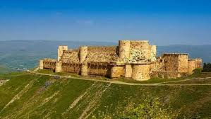
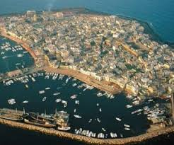
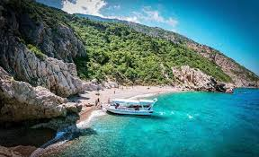

المعالم التاريخية والطبيعية

الجامع الأموي الكبير
الموقع: دمشق
أحد أفخم وأقدم المعالم الإسلامية في العالم، يقع في قلب مدينة دمشق القديمة ويعد رمزاً للحضارة الأموية.

قلعة حلب الشهباء
الموقع: حلب
تعد من أضخم القلاع العسكرية في التاريخ، تتربع على تلة في وسط مدينة حلب وتطل على أسواقها القديمة.

آثار تدمر التاريخية
الموقع: البادية السورية
"لؤلؤة الصحراء" وعاصمة مملكة زنوبيا، تضم المسرح الروماني الشهير والأعمدة التي تحكي عظمة التاريخ.

قلعة الحصن
الموقع: حمص
أجمل قلعة في العالم من حيث العمارة العسكرية، مسجلة على لائحة التراث العالمي لليونسكو.

جزيرة أرواد
الموقع: طرطوس
الجزيرة المأهولة الوحيدة في سوريا، مشهورة بصناعة السفن يدوياً وقلعتها البحرية التاريخية.

شواطئ كسب والسمرا
الموقع: اللاذقية
حيث يلتقي الجبل الأخضر مع البحر الأزرق، منطقة ساحرة بطبيعتها الجبلية ومناخها المعتدل.